Data-Driven Personalized Design#
Authors: Jose Martinez Castro, Wolf Song
Last Edited: 2023-07-15
This tutorial focuses on data-driven design using Rhino Grasshopper for ergonomic design. The tutorial covers collecting data for ergonomic design, analyzing ergonomic data with Rhino Grasshopper using data to inform design, and additional reading on lattice structures and meta-materials. The tutorial includes a case study on designing a shoe sole based on pressure data collected from a user’s foot standing on pressure sensors. It includes step-by-step instructions, Grasshopper scripts, and images to illustrate the concepts covered in the tutorial.
1. Introduction#

https://www.core77.com/posts/71778/MakerBot-Design-Series-The-Running-Shoe
By understanding how users interact with a product and where they experience pain or discomfort, designers can create products tailored to their users’ needs and preferences Design for Personalized Fit , we explored how we can create the basis for our product geometry from the user’s 3D scanned data to ensure a personalized fit. In this lesson, we will explore how we can expand on personalized products by adding additional functionality and ergonomic comfort to the design.
In this tutorial, we’ll explore how designers can collect data to inform their design and provide examples of how Rhino Grasshopper can be used to create parametric designs that respond to the collected data to improve comfort for the end user
2. Collecting Data for Ergonomic Design#
Collecting user data is a crucial step in the data-driven design process. Gathering data about how users interact with a product can help designers create products tailored to their users’ needs and preferences. In this section, we will discuss different types of data that designers can collect for ergonomic design in Grasshopper.
Pressure Data#
Pressure data is a common type of data collected in ergonomic design. Pressure sensors can be used to measure the distribution of pressure on a surface, such as a seat or a shoe sole. This data can be used to create products that distribute pressure more evenly, reducing discomfort and pain for the user.
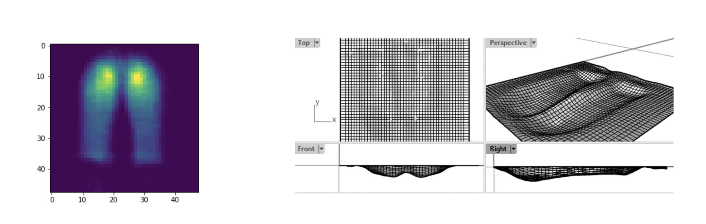
Designing a shaped seat-pan cushion to improve postural (dis)comfort reducing pressure distribution and increasing contact area at the interface, Iolanda Fiorilloa, Yu Song, Peter Vink, Alessandro Naddeo
Heat Distribution Data#
Heat distribution data can also be collected in ergonomic design. This type of data measures the temperature distribution on a surface. For example, it can be used to create products that regulate temperature by reducing material use around areas of high heat distribution.
Sensitivity/Pain Data#
Sensitivity/Pain data is another type of data that can be collected in ergonomic design. This data is typically collected through user input and can help designers understand where users experience pain and discomfort when using a product. This can be collected in a highly localized approach by focusing on a specific area of the body and applying discomfort to a number of points around this body part. This information can be used to create products that reduce or eliminate pain and discomfort.
3. Case Study: Designing a Shoe Sole Based on Pressure Data#
In this tutorial, we will explore a case study of using pressure data collected from a user’s foot while standing on pressure sensors. This example is inspired by a paper from the TU Delft Faculty of Industrial Design Engineering on designing shape seat-pan cushion to improve the comfort of the user (Fiorillo 2021).
In the end, the goal in this tutorial will be to use this pressure data to drive the design towards a more comfortable shoe sole to support and enhance the comfort of the user’s foot. We will explore how data from a CSV file can be read and visualized on a surface using colors to represent the pressure values at each point on the surface. Next, we can use Rhino Grasshopper to modify the geometry in various ways based on the data, such as molding the surface to the pressure data or creating a variable density grid to create a more comfortable shoe sole. Additionally, we can use Rhino Grasshopper plugins to explore the use of lattice structures and meta-materials in data-driven design.
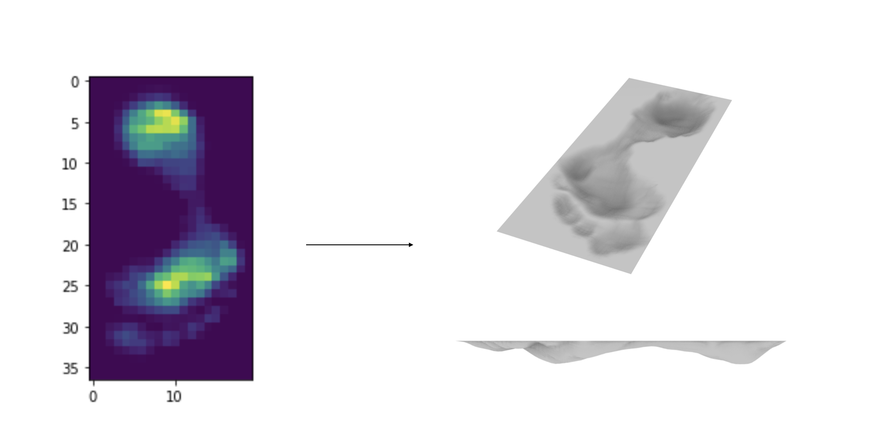
Case study of using foot pressure data to drive the design of a shoe sole
💡 To follow along with this tutorial, make sure to download the following grasshopper script and CSV file containing the foot pressure data:
4. Analyzing Data with Grasshopper#
In this section, we will discuss how Rhino Grasshopper can be used to analyze, interpret, and visualize ergonomic data, specifically pressure data
4.1 Reading the Data#
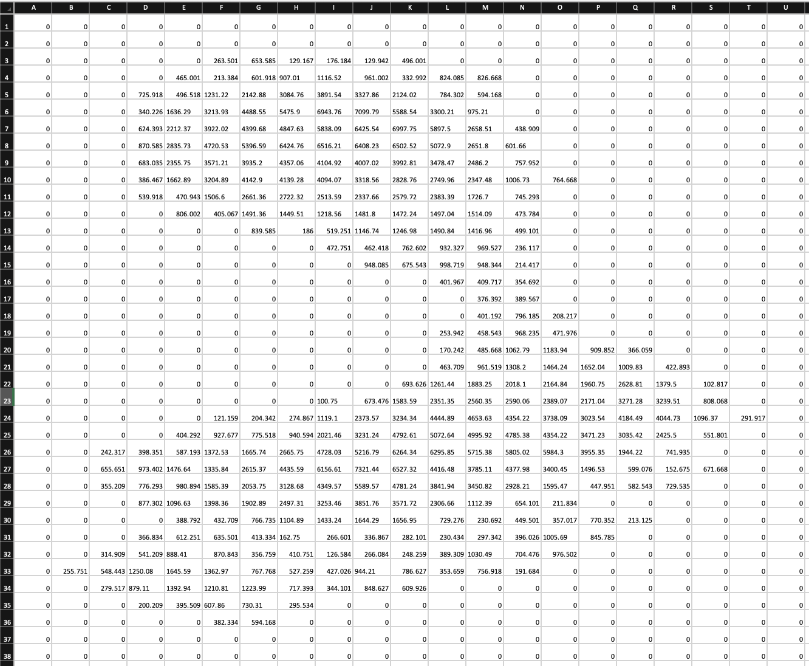
To start, download the files and save it to your computer. Click on the File Input component and select the CSV file on your computer. Next, we will use the Read CSV component to read the data from the CSV file with the specified delimiter ( “;’ in this case). Connect the Read CSV component to a Panel component to verify that the data was read correctly and a data tree was created.
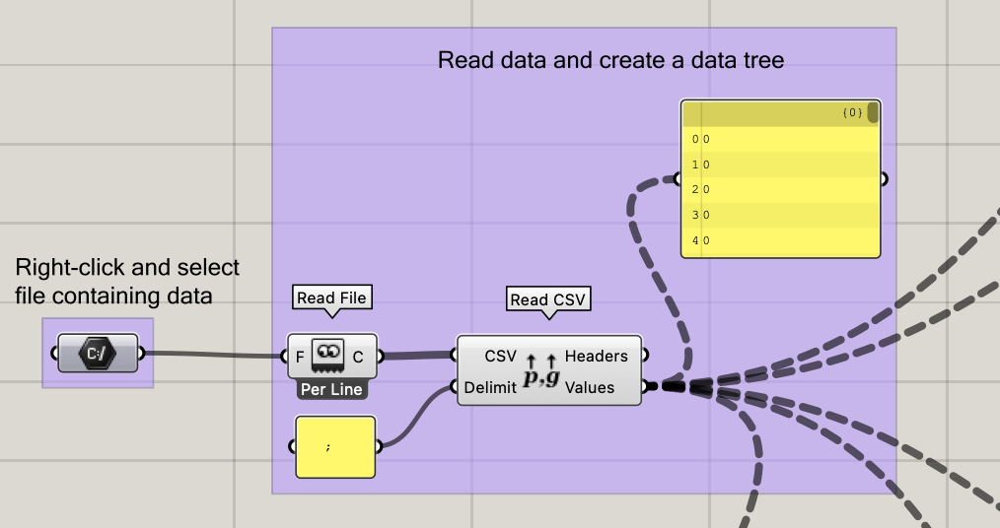
4.2 Set Up Rectangular Grid#
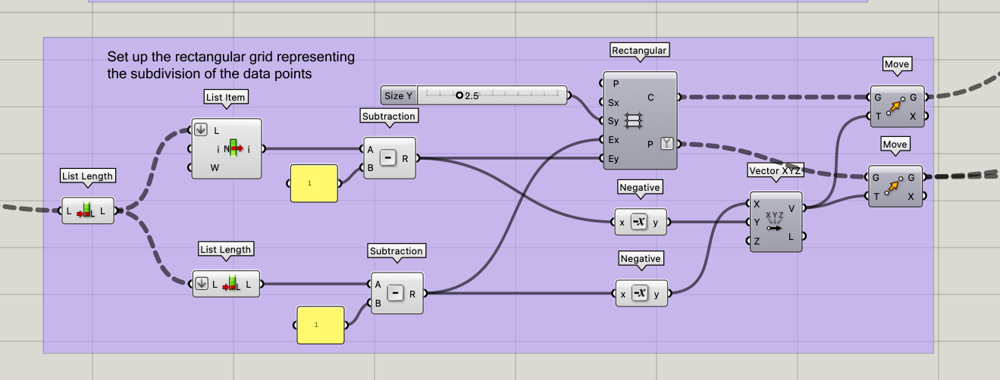
The next step is to set up the rectangular grid to represent the subdivision of data points. The idea here is to create a cell per data point in the CSV file thus each cell containing a respective pressure data point. To generate the rectangular grid, we need to know the number of cells in the X and Y direction. This is corresponding to the number of columns (x) and rows (y) in the CSV file. In Grasshopper, the data is represented by a data tree with a depth of 1 containing a list at each branch. The number of branches would represent the number of columns (x) in the grid, and the number of lists would represent the number of rows (y).
Here we use the List Length component once to obtain the (y) and we use the component again to obtain the (x). We then subtract “1” from both values as we are translating from point to cell to ensure the data will match the rectangular grid cells. We then use the Rectangle Grid component to create a grid of cells/points that represents the pressure sensor data. Finally, we use the Move component to center the grid to the center of the Rhino viewport.
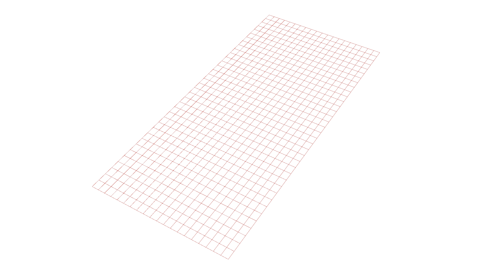
4.3 Mapping the Data#
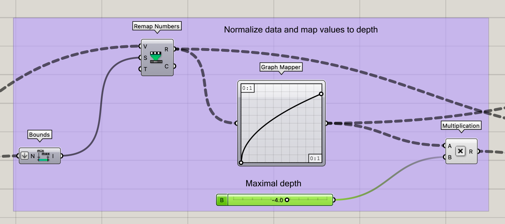
Next, the Remap Numbers component is used to map a range of values to another range of values. This is useful when working with data that has a wide range of values, such as the pressure data collected in the shoe sole case study discussed in this tutorial. By remapping the pressure values to a range between 0 and 1, we can use the normalized values to visualize the data on a surface using colors and modify the geometry later on.
The Remap Numbers component takes as input three sets of values: the minimum and maximum values of the original data range, and the minimum and maximum values of the desired output range. It then maps the input values to the output range using a linear transformation. For example, if the original data range is from 0 to 100 and the desired output range is from 0 to 1, the Remap Numbers component will map the input values of 0 to 100 to the output range of 0 to 1.
Finally, we use the Graph Mapper and Multiplication component to fine tune the final mapping of the data. This can be adjusted manually later in the design process to achieve the desired results. In this particular case, we use the Multiplication component to control the maximum depth of the molding of the shoe sole in the next section.
4.4 Visualizing the Data#
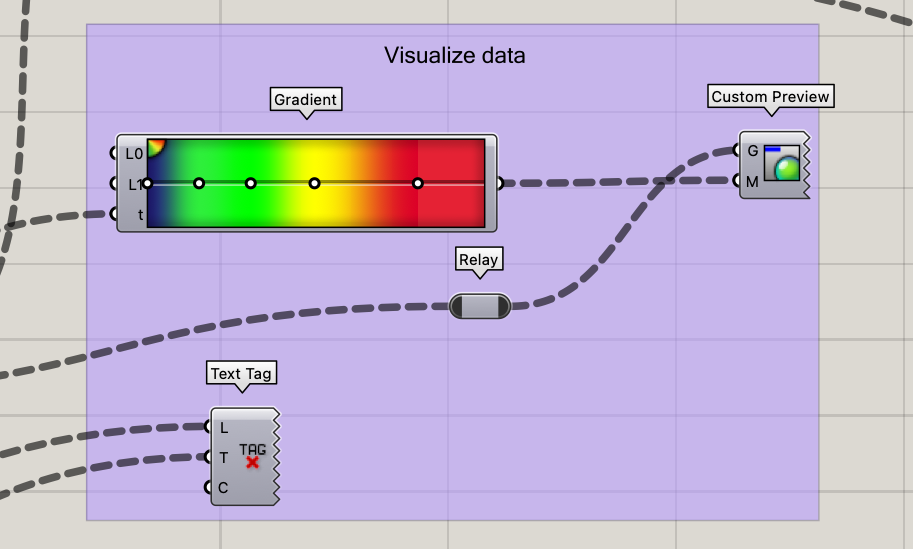
We can visualize the pressure data on a surface using text and heat map colors to represent the pressure values at each point on the surface. This allows us to see where pressure is concentrated on the surface and make design decisions based on this information.
4.4.1 Visualizing the Data Points as Text#
The data points can be visualized as text on the rectangular grid This provides a more detailed understanding of the pressure values at each point on the surface. To do this, the Text Tag component can be used to add the pressure values as text to each point on the surface. This takes as input the points from the Rectangle Grid and the data values from the Read CSV. This can be useful for providing a more detailed understanding of the pressure values at each point on the surface.
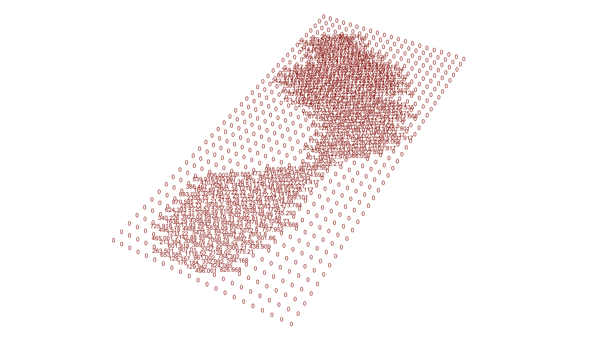
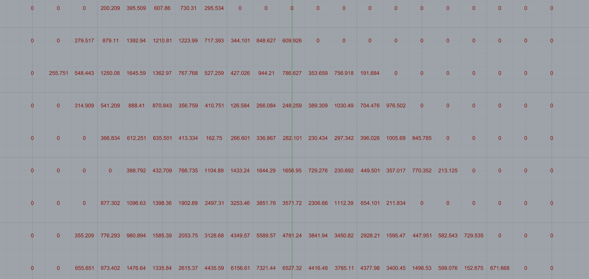
4.4.2 Visualizing the Data Points as Heat Map Colors#
Heat maps are a useful way to visualize pressure data, allowing us to see where pressure is concentrated on a surface. In Grasshopper, we can use the Gradient component to map the pressure data to a range of colors. The Gradient component takes as input a set of values and maps them to a range of colors based on a user-defined color gradient. We use the remapped values as input for the Gradient component in this case generating a color of blue for 0 and red for 1 with the other colors for any values in between.
Finally, The Custom Preview component takes as input the custom color gradient from the normalized pressure data and the rectangular grid cells from Rectangle Grid and outputs a set of colored surfaces that represent the pressure values at each point on the surface.
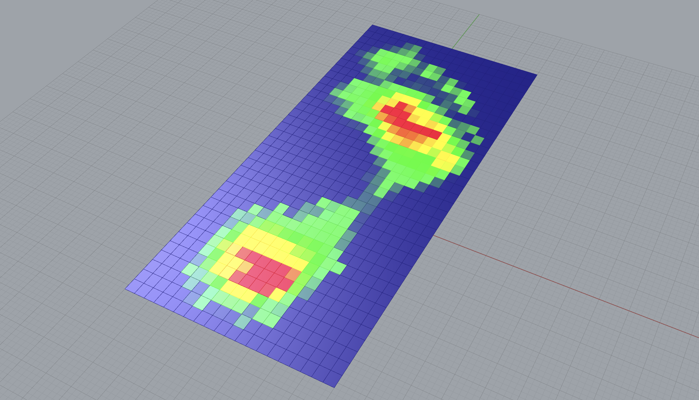
5. Using Data to Inform Design#
5.1 Molding surface to pressure data#
Once we have collected and analyzed ergonomic data, we can use this information to drive the design process. One way to use this data is to mold a surface to the pressure data.
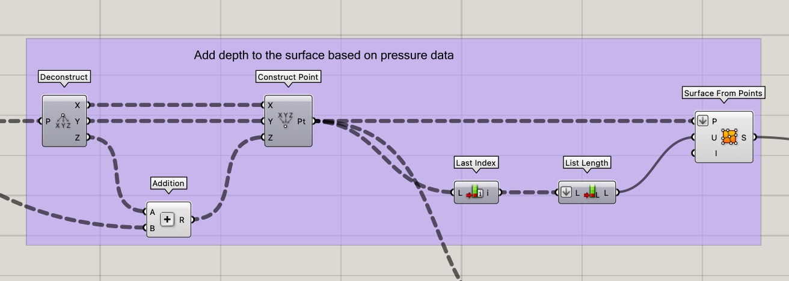
First, we can use and modify the values from 4.3 Mapping the Data to map the pressure data to a range of values that can be used to modify the geometry. Here we take the points from the Rectangle Grid component and deconstruct it into XYZ. To mold the design in the Z direction, we add the remapped pressure data values to the Z axis and construct new points. Using the Surface From Points component, we can then create molded rectangular surface with the shape of the user’s foot derived from the pressure data.
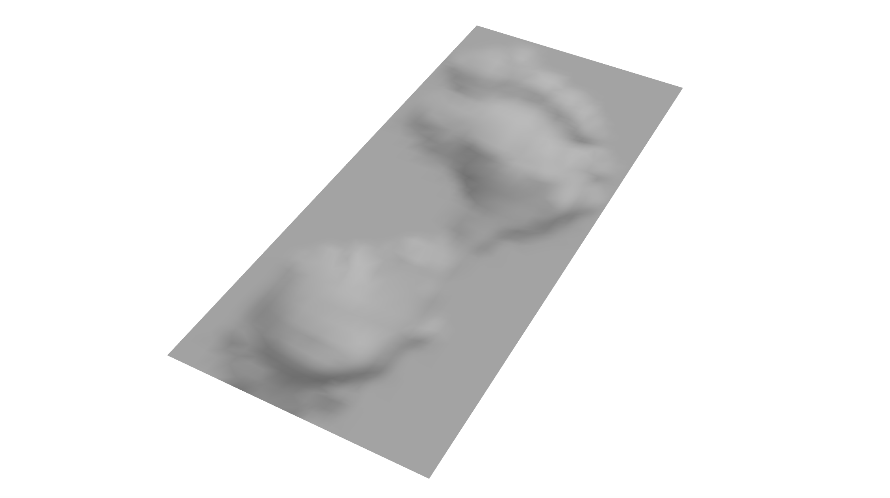
5.1.1 Create Shape of the Sole#
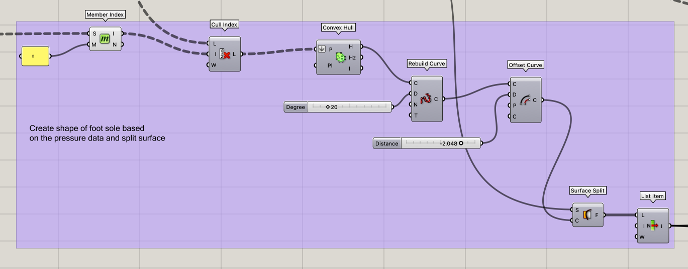
In this example, we will use the pressure data to generate the shape of the shoe sole as we do not have additional information on the foot. The idea is to generate an estimated outline around the non-zero pressure points and create a surface within this outline. In Rhino Grasshopper, the Convex Hull component can be used to generate an “outline” or convex hull from a set of points. A convex hull is the smallest convex polygon that contains all the points in a given set. In other words, it is the shape that encloses a set of points in the most efficient way possible, without any unnecessary jutting out or indentations.
We first begin by removing the non-zero points using the Member Index and Cull Index components. We then use this as input into the Convex Hull with additional modifications to the curve. Finally, we use the curve to split the molded rectangular surface generated before using the pressure data and use the List Item component to only select the surface with the shape of the shoe sole.
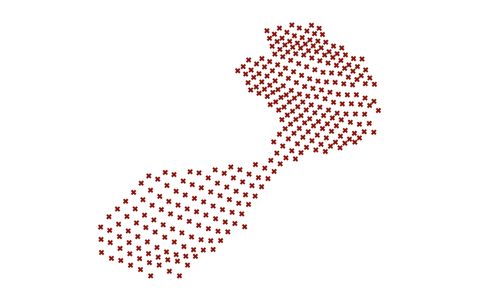
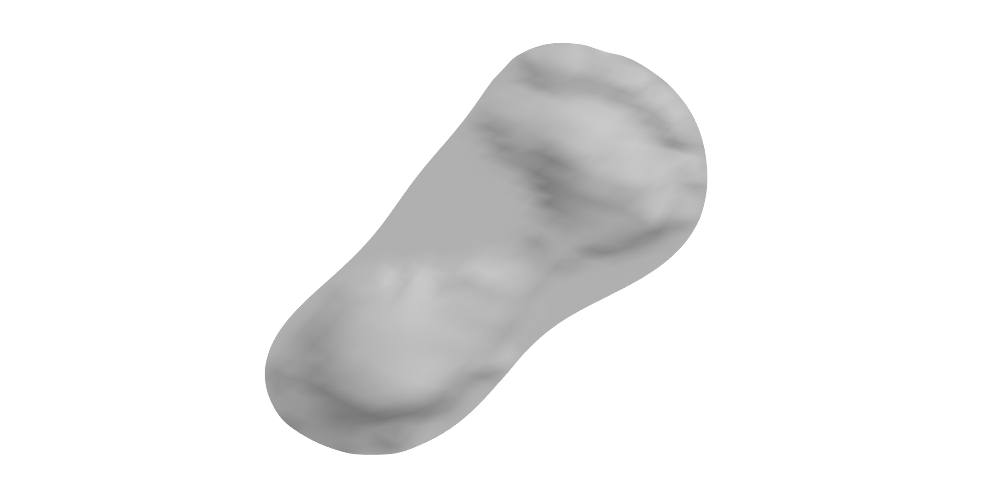
5.1.2 Loft the Surface of the Sole#
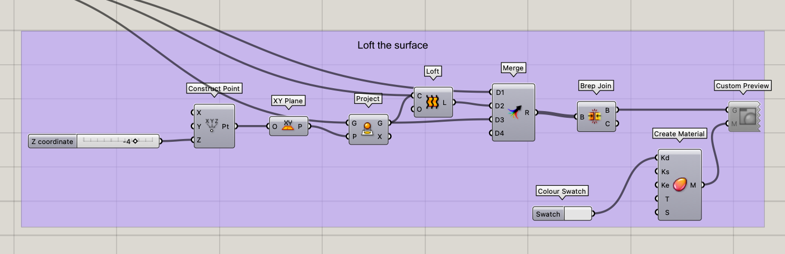
Once we have the shape of the sole, we can use Rhino Grasshopper to loft a surface between the user’s foot shape and an offset plane. We project the curve onto the offset plane before lofting the two surfaces. This surface can then serve as the base for the shoe sole and further modifications can be added such as applying an adaptive lattice structure on the inside as will be discussed in the further reading.
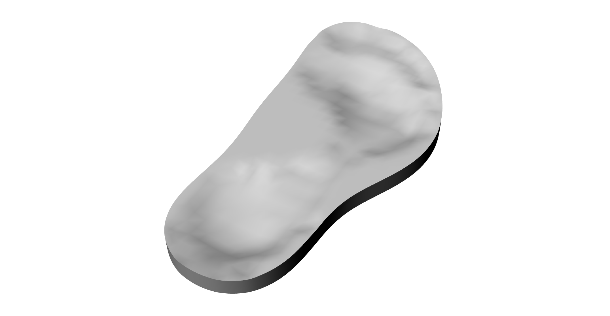
5.2 Variable Density Grid#
Another way to use pressure data to inform the design process is to create a variable density grid. This can be done using Grasshopper to create a rectangular grid that responds to the pressure data. Here, we will show a simple example using rectangular grids. The grid can then be used to provide additional support in high-pressure areas by locally increasing the local thickness of the grid while maintaining a lower thickness in low-pressure areas to allow for flexibility and a lightweight design.
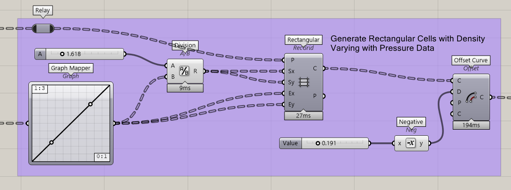
The concept to generate the variable density grid is similar to the attractor concept discussed in Lesson 3 - Data Structures. Here we take the remapped pressure values and we use the Graph Mapper to map the values to the respective number of rectangular cells per pressure point. Next, we will add the Rectangular Grid component. For the Plane input, we will use the the points of the grid structure before creating the Convex Hull sole shape (we will project the cells back to the sole surface later on). For the Extent input, we will use the Graph Mapper values to determine the number of rectangular cells. For the Size input, we must make sure to make the size in relation to the number of cells to avoid overlapping rectangles by dividing a constant size value by the cell number. We will finish by adding the Offset Curve component to create an inner offset to the cells and add some thickness to each of the cells. The resulting Rectangular Cells are shown in the image below.
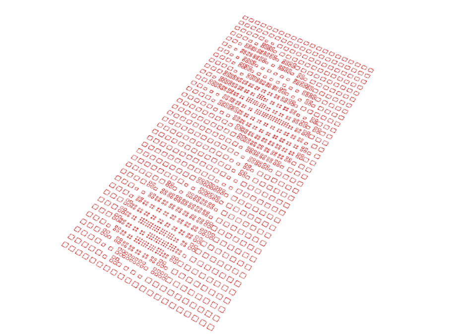
5.2.1 Projecting Grid on Sole Surface#
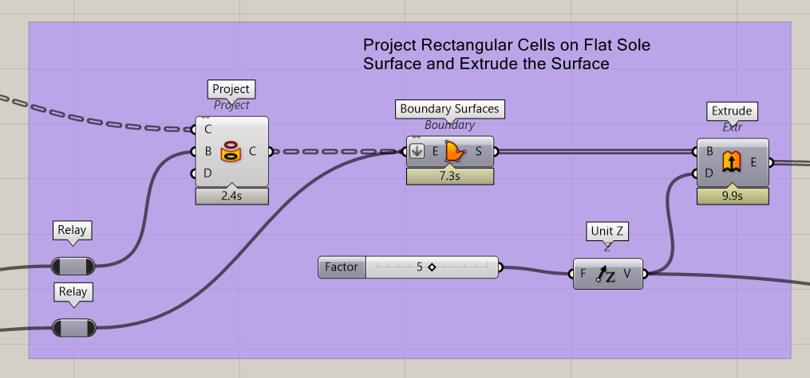
Next we will project the rectangular cells created above onto a FLAT shape of the sole (Convex Hull). As we will see in the next section, we will first extrude a flat sole with the variable density grid, and later use the shape of the sole with depth to make a cut onto the sole. This is done to make the process easier as projecting the grid onto a complex surface initially does not yield the correct results.
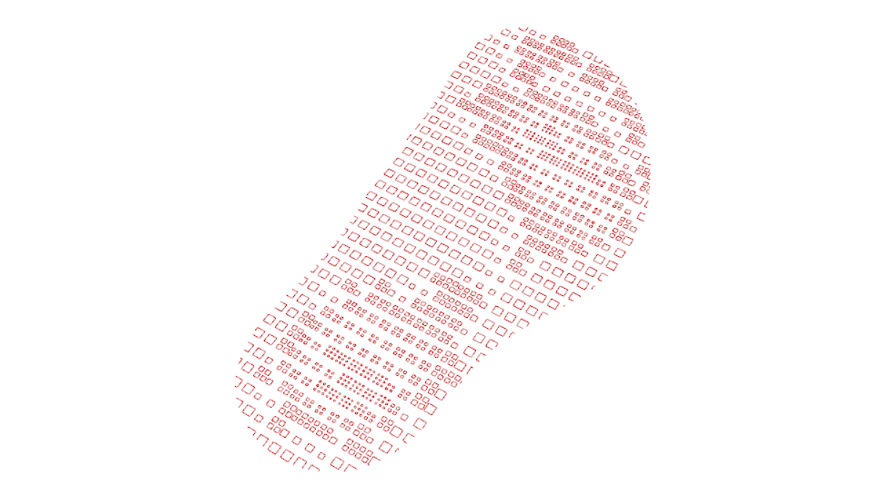
After projecting the grid onto the sole surface, we will create a boundary surface between the outer edge of the sole and the grid. Finally, we can extrude the modified sole in the Z-direction to give the sole some thickness.
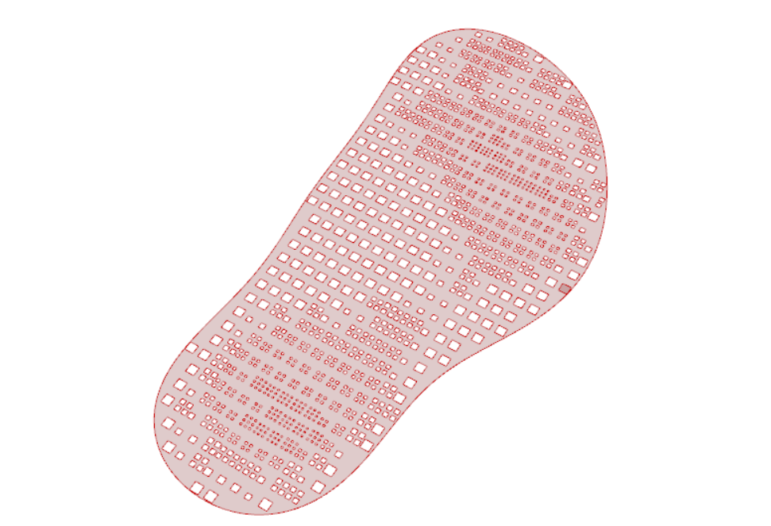 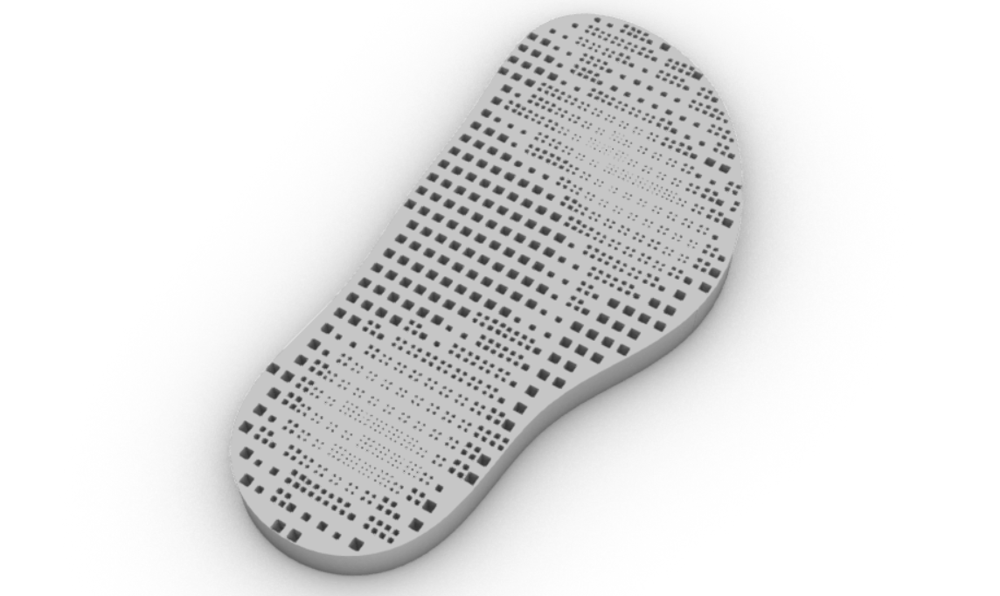
5.2.4 Adding Depth to the Final Sole#
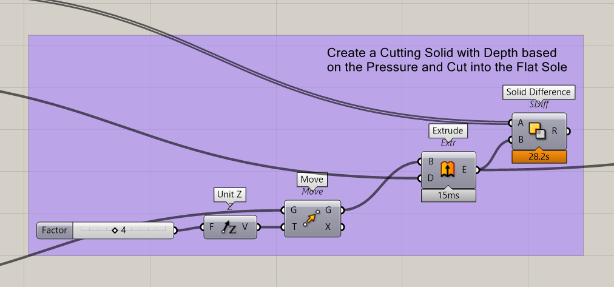
The final step is to use the mould of the foot created from the pressure data to add depth to the top of the shoe sole with the variable grid. We will do this by performing a Solid Difference operation. We will create a solid surface of the moulded foot on a rectangle and extrude it to the desire thickness for cutting the sole. We then use the Solid Difference component to cut the shoe sole by the moulded foot surface.
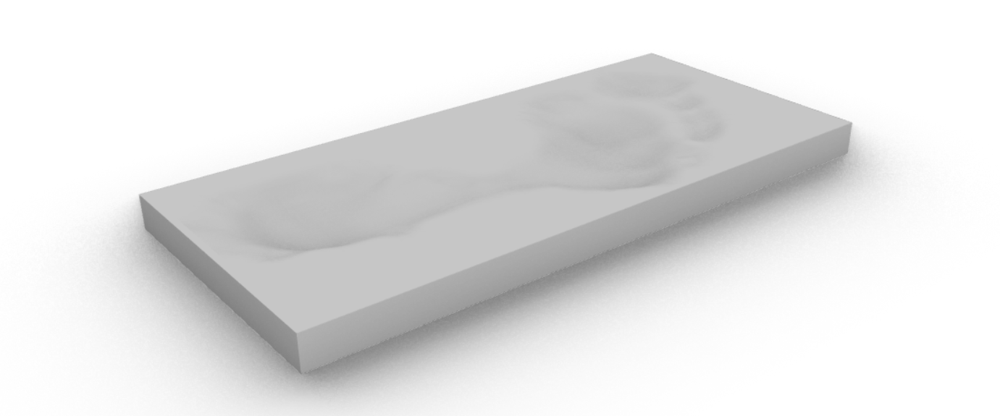 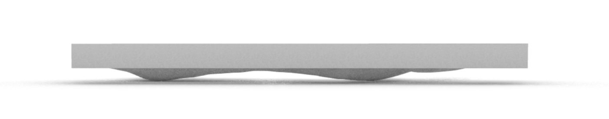
The final result is a custom shoe sole adapted to the user’s foot that includes a variable density grid and custom moulded top surface based on the user’s pressure data.
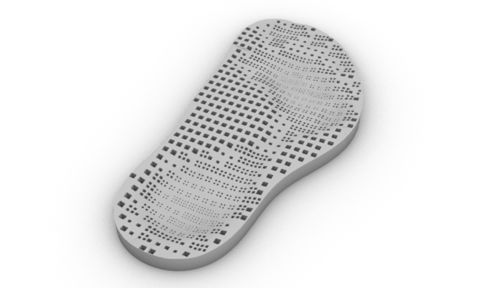
6. Extra Reading#
Lattice Structures#
Another way to use data-driven design is to create lattice structures in response to the collected data. Lattice structures are lightweight and flexible, making them ideal for applications such as shoe soles or other ergonomic products.
In Rhino Grasshopper, we can use plugins such as Crystallon to create lattice structures that respond to the collected data. For example, we can use pressure data to determine the density of the lattice structure in different areas of the product in 3D.
https://www.food4rhino.com/en/app/crystallon
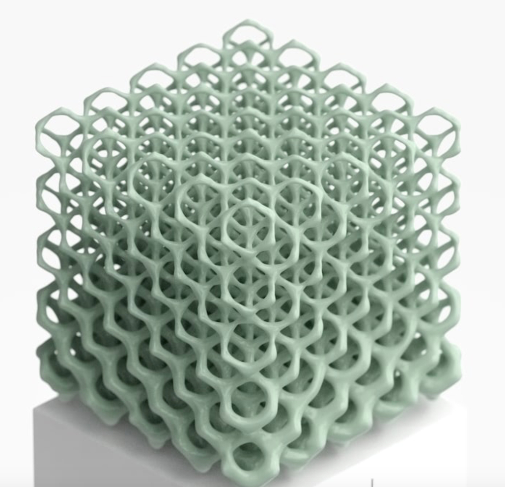
Meta-materials and Auxetic Structures#
Meta-materials and auxetic structures are another area of interest in data-driven design. These materials have unique properties, such as negative Poisson’s ratios or tunable stiffness, that can be useful in ergonomic product design. By using data to inform the design of these materials, we can create products that are not only comfortable but also more durable and efficient. There is a lot of potential for innovation in this area, and it will be exciting to see how data-driven design continues to shape the future of ergonomic product design.
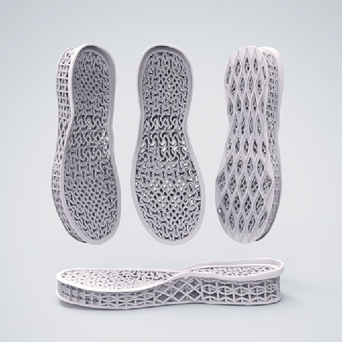
Davide Jose Nogueira Amorim, Troy Nachtigall, and Miguel Bruns Alonso. 2019. Exploring mechanical meta-material structures through personalised shoe sole design. In Proceedings of the 3rd Annual ACM Symposium on Computational Fabrication (SCF ‘19). Association for Computing Machinery, New York, NY, USA, Article 2, 18. https://doi.org/10.1145/3328939.3329001
Additionally, you can take a look at the following graduation projects which explore meta-materials and data-driven design to create a personalized design for their user
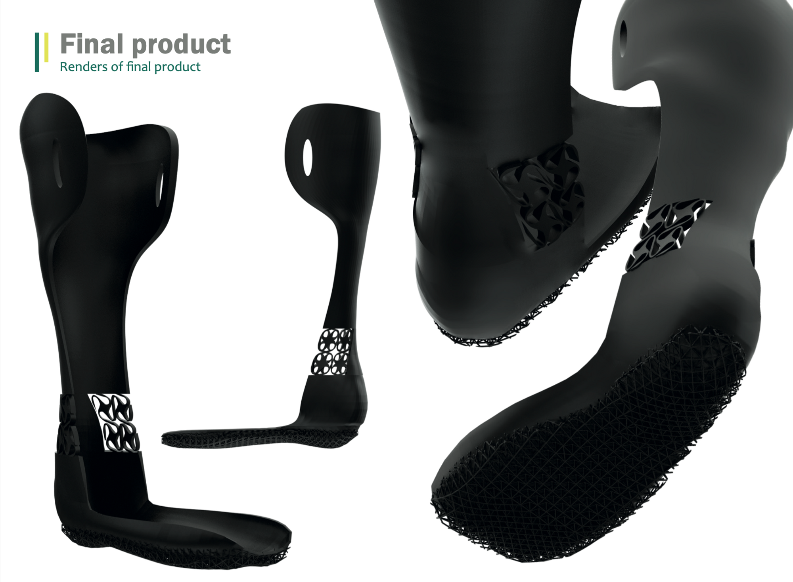
Application of mechanical metamaterials in a parametric, 3D printed ankle foot orthosis
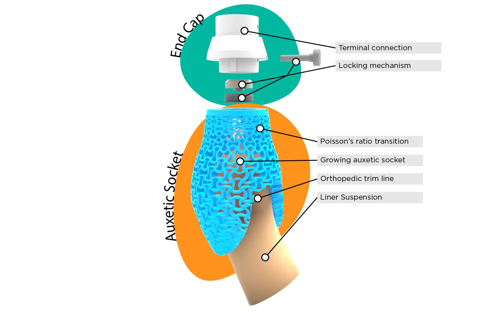
Design of a 3D printed prosthetic socket that accommodates pediatric growth